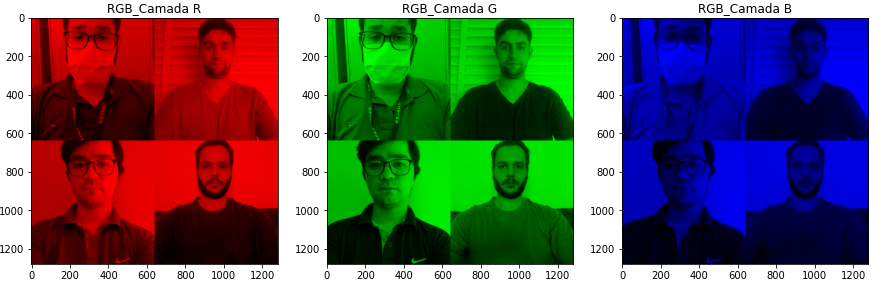
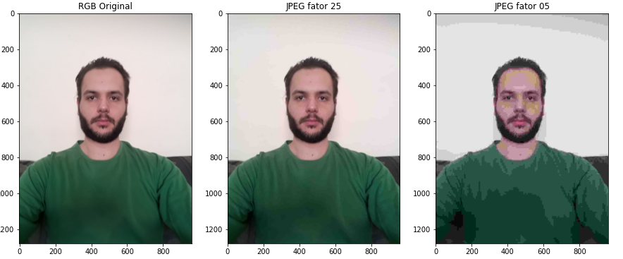

Procedimentos
Nesta prática, foram feitas alterações simples em imagens utilizando a linguagem Python na ferramenta Google Colab.
Na primeira parte do laboratório foram explorados diferentes encodings de cores RGB, BGR, YCbCr e HSV. E também foi feito a divisão em camadas dos encodings RGB e YCbCr.
Na segunda parte do laboratório foi explorado a função de compressão do comando imwrite() ao salvar um formato JPEG escolhendo diferentes qualidades de imagens.
Na terceira parte do laboratório foi executado um experimento com a Transformada discreta cosseno onde foi calulado a matriz DCT da parte de uma imagem e zerada parte das compenentes da matriz para analizar a perda de informação da imagem.
Tudo isto foi feito utilizando as bibliotecas Matplotlib, Numpy e OpenCV.
Link para o Google Colab
Resultados - 01
Apresentação de encoding BGR vs RGB
Imagens apresentadas com diferentes Encodings

Imagens RGB separadas por camadas
Imagens YCrCb separadas por camadas
Resultados - 02
Diferentes fatores de qualidade para formato JPEG
